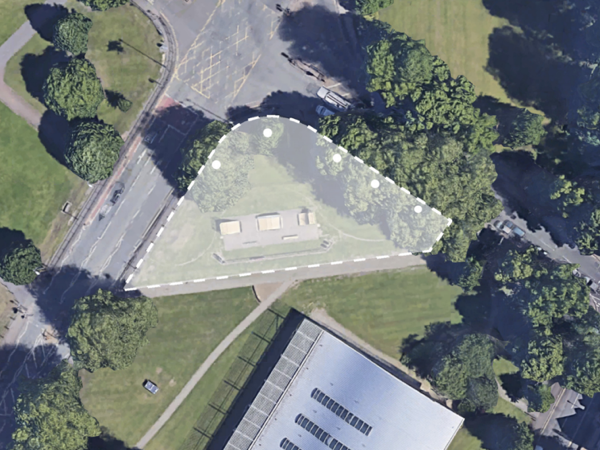
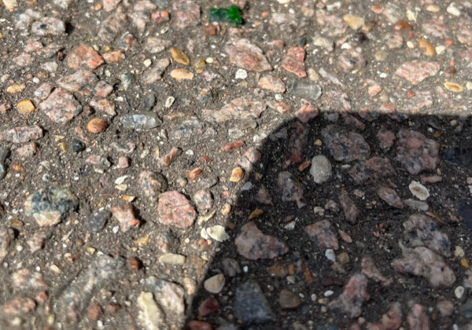
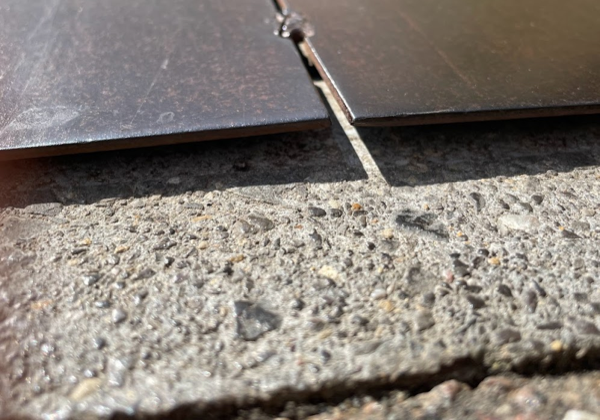
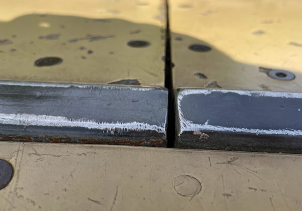
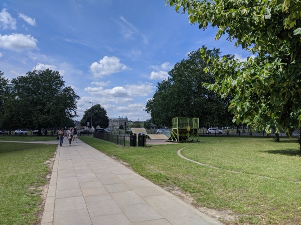
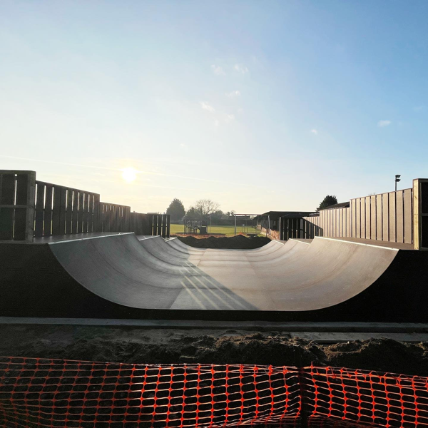
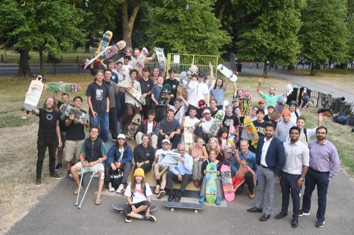

Donkey Common Skatepark
Donkey Common skatepark sits at the gateway to Mill Road, one of Cambridge's most vibrant streets. Built nearly 20 years ago, the park is in need of refurbishment.
Cam Skate are working with Cambridge City Council to explore options for improving this space.

Why does Donkey Common skatepark need to be refurbished?
The construction of this skatepark makes it difficult to use safely.

Rough surface - The tarmac surface makes falls more likely and more dangerous.

Bumpy joins - Uneven transitions between ramp and ground can cause sudden stops.

Slippery material - The varnished ramp surface increases the risk of falls.
According to RoSPA guidance on skateboarding safety, "accidental falls due to loss of balance are the most common with about half of falls due to rough riding surface."
Additionally the outdated design makes this one of the most unpopular skateparks in the city:
- The footprint of the park is too small to allow for more than one person to skate at once
- The ramps are too big, which makes them unsuitable for beginners, and for a park of this size
- The current installation looks clunky and dated, presenting an eye-sore

Three possible visions for Donkey Common skatepark
We've identified three different approaches that could work for this space, each with different costs, benefits, and appeal to different types of skaters.
Option 1: Skatelite Mini Ramp
A high-quality wooden mini ramp with Skatelite surface.
Example: Fowlmere mini ramp by Four One Four Skateparks.
Estimated cost: £30,000
Pros
- Cheapest option
- Can fit within existing footprint
- A high quality outdoor mini ramp is a skate feature that Cambridge currently lacks
- Good for skaters of all abilities
- Surface likely to last 5 to 10 years
Cons
- Will need eventual resurfacing
- Blocks sightlines
- Not an entirely new type of feature in Cambridge

Option 2: Concrete Bowl
A purpose-built concrete bowl offering a unique skating experience. Concrete is extremely durable and requires minimal maintenance.
Bowls are popular with transition skaters and the growing roller skating community. Cambridge currently has no dedicated bowl.
Example: Heartsease Pool in Norwich by Betongpark.
Estimated cost: £75,000
Pros
- Affordable
- Can fit within existing square footage of tarmac footprint
- Increase sightlines across park if sunk or partially sunk into ground
- Entirely new type of skate feature for Cambridge
- Concrete is durable
- Good for skaters of all abilities
Cons
- Would require additional funding (but could likely be paid for from available grants)


Image source: Betongpark
Option 3: Skate Plaza
A street-style plaza with ledges, banks, and manual pads. This design feels like a public space while being primarily a skatepark.
Plaza-style parks are beginner-friendly and allow many skaters to use the space at once. They also suit the central, visible location at the gateway to Mill Road.
Outline concept produced by Cam Skate.
Estimated cost: £110,000
Pros
- Largest skating area
- Biggest potential for mixed-use (seating, stalls for fairs) - well suited to central location
Cons
- Biggest expansion of footprint
- Most expensive option - would likely require funding from community plus maximal use of grants
How to make this happen
Refurbishing Donkey Common skatepark requires collaboration between the skating community, Cambridge City Council, and potential funders.
What we need:
- Council support to progress the project and apply for planning permission if necessary
- Community input on which design direction to pursue
- Input on the tender process so feedback from the skating community of Cambridge makes up a significant part of the quality score, allowing the skating community to have a say on the final design and construction proposal
- Funding from grants, crowdfunding, and local businesses
The local skate community have already raised over £2,500 towards this project through crowdfunding and grant applications. 1

Want to get involved or share your views on the project? Get in touch at hello@cam-skate.co.uk
Read our Conflict of Interest Policy, Access Statement, and Equal Opportunities Policy.
Notes
1 Darryl Preston - the Police & Crime Commissioner for Cambridgeshire - awarded the Donkey Common project £3,500 from the PCC Youth Fund. Unfortunately it was not possible to spend the money in time and the grant was returned.